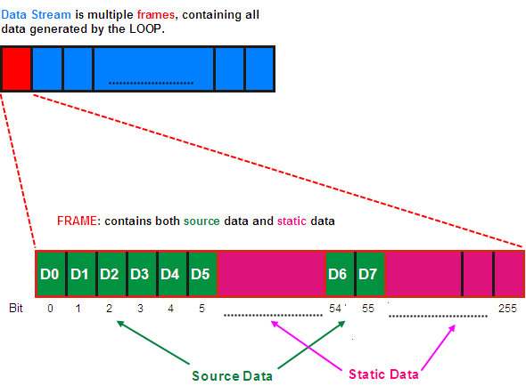

Digital Source Memory Terminology
Refer to the following figure for the definitions of data stream, source data, and static data.

The data stream is defined as a sequence of frames. Each frame contains source data, which is dynamically generated and changed as required by the application (represented in green in the figure), and static data, which does not need to be changed within the frame represented in pink). In a normal DSM setup, the static data is stored in a main label. The source data is stored in special DSRC (Digital SouRce Memory) labels, and applied from the main label.
Functional changes
- Introduced before SmarTest 6.3.2